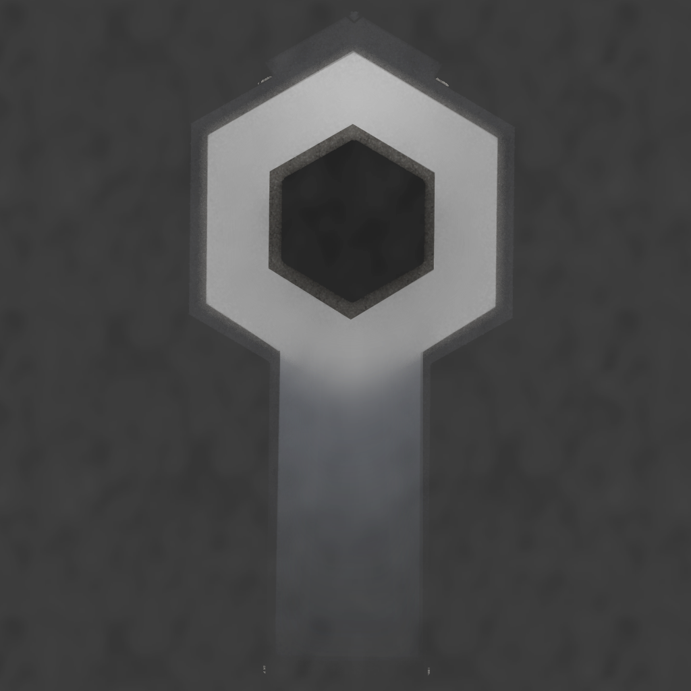

<a-scene vr-mode-ui="enabled: true; enterVRButton:.btnVR; enterARButton:.btnAR;" embedded loading-screen="enabled:false;">		
	<!-- preloading -->
	<a-assets timeout='20000'>
		<!-- mixins, sort of prefabs.
			https://aframe.io/docs/1.0.0/core/mixins.html
		-->
		<a-mixin id='navpoint' collider geometry='primitive: sphere' material='color:#D3D3D3; shader: flat; fog: false; opacity: 1; transparent:true; heightOffset: -.6'  scale='.1 .1 .1'
		animation__mouseenter_color="property: components.material.material.color; type: color; to: white; startEvents: mouseenter; dur: 200"
		animation__mouseleave_color="property: components.material.material.color; type: color; to: #D3D3D3; startEvents: mouseleave; dur: 200"
		animation__mouseenter_scale="property: scale; to: .2 .2 .2; startEvents: mouseenter; dur: 100"
		animation__mouseleave_scale="property: scale; to: .1 .1 .1; startEvents: mouseleave; dur: 100"></a-mixin>					

		<!-- Assets -->
		<a-asset-item id="monument_model" src="assets/monument.obj"></a-asset-item>
		</img>
		</img>

		<a-asset-item id="lucht_model" src="assets/lucht.obj"></a-asset-item>
		</img>
		</img>
		
		<a-asset-item id="wolken_model" src="assets/wolken.obj"></a-asset-item>
		</img>
		</img>

		<a-asset-item id="bomenvoor_model" src="assets/bomenvoor.obj"></a-asset-item>
		</img>
		</img>
		
		<a-asset-item id="boomvoortakken_model" src="assets/boomvoortakken.obj"></a-asset-item>
		</img>
		</img>		

		<a-asset-item id="bomenachter_model" src="assets/bomenachter.obj"></a-asset-item>
		<a-asset-item id="monumentreflectie_model" src="assets/monumentreflectie.obj"></a-asset-item>
		
		<!-- Museum -->
		<a-asset-item id="murenlinks_model" src="assets/murenlinks.obj"></a-asset-item>		
		<a-asset-item id="murenrechts_model" src="assets/murenrechts.obj"></a-asset-item>
		</img>
		
		<a-asset-item id="tegelslinks_model" src="assets/tegelslinks.obj"></a-asset-item>
		</img>
		
		<a-asset-item id="tegelsrechts_model" src="assets/tegelsrechts.obj"></a-asset-item>
		</img>
		
		<a-asset-item id="museumreflectie_model" src="assets/museumreflectie.obj"></a-asset-item>
		</img>
		
		<a-asset-item id="introtext_model" src="assets/introtext.obj"></a-asset-item>
		</img>
		
		<a-asset-item id="display_model" src="assets/display.obj"></a-asset-item>
		</img>
		
		<a-asset-item id="displaytegels_model" src="assets/displaytegels.obj"></a-asset-item>
		</img>
		
		<a-asset-item id="vloer_model" src="assets/vloer.obj"></a-asset-item>
		</img>		
		
		<a-asset-item id="diorama_model" src="assets/diorama.obj"></a-asset-item>
		</img>
		
		<a-asset-item id="plattegrond_model" src="assets/plattegrond.obj"></a-asset-item>
		</img>		
		
		<a-asset-item id="dioramaglasbinnen_model" src="assets/dioramaglasbinnen.obj"></a-asset-item>
		</img>
		
		<a-asset-item id="maquettebordje_model" src="assets/maquettebordje.obj"></a-asset-item>
		</img>
		
		<a-asset-item id="monumentbordje_model" src="assets/monumentbordje.obj"></a-asset-item>
		</img>
		
		<a-asset-item id="monumentshalbordje_model" src="assets/monumentshalbordje.obj"></a-asset-item>
		</img>
		
		<a-asset-item id="bakenbordje_model" src="assets/bakenbordje.obj"></a-asset-item>
		</img>
		
		<a-asset-item id="musschenberg_model" src="assets/musschenberg.obj"></a-asset-item>
		</img>
		
		<a-asset-item id="vredespaleis_model" src="assets/vredespaleis.obj"></a-asset-item>
		</img>
		
		<a-asset-item id="gang_model" src="assets/gang.obj"></a-asset-item>
		</img>
		
		<a-asset-item id="gangglas_model" src="assets/gangglas.obj"></a-asset-item>
		</img>		
				
		<a-asset-item id="glasraam_model" src="assets/glasraam.obj"></a-asset-item>
		</img>	
		
		<!-- Stad -->
		<a-asset-item id="stadachter_model" src="assets/stadachter.obj"></a-asset-item>
		</img>
		</img>

		<a-asset-item id="stadvoor_model" src="assets/stadvoor.obj"></a-asset-item>
		</img>
		</img>
		
		<a-asset-item id="stadachterspiegel_model" src="assets/stadachterspiegel.obj"></a-asset-item>
		<a-asset-item id="stadvoorspiegel_model" src="assets/stadvoorspiegel.obj"></a-asset-item>

		<a-asset-item id="strand_model" src="assets/strand.obj"></a-asset-item>
		</img>
		</img>

		<a-asset-item id="trambaan_model" src="assets/trambaan.obj"></a-asset-item>
		</img>
		</img>

		<a-asset-item id="vijver_model" src="assets/vijver.obj"></a-asset-item>
		</img>
		</img>
		
		<a-asset-item id="hek_model" src="assets/hek.obj"></a-asset-item>
		</img>
	
		
		<!-- Autos -->
		<a-asset-item id="auto_model" src="assets/auto.obj"></a-asset-item>
		</img>
		</img>
		
		</img>
		</img>

		<!-- Ik weet niet waarom, maar het lukt niet om in de mixin src:#bird_tex te zetten. Ook was bij mij alpha-test nodig, maar niet in m'n testscene -->
		<a-asset-item id="auto_model" src="assets/auto.obj"></a-asset-item>
		<a-asset-item id="bird_model" src="assets/groepvogels.obj"></a-asset-item>
		<a-image id='bird_tex' src='assets/vogel.png'></a-image>					
		<a-mixin id='bird' sprite-sheet="cols:5; rows: 4;" animation='property: sprite-sheet.progress; from: 0; to: 1; dur: 500; loop:true;'></a-mixin>


		<!-- time of day model -->
		<a-mixin id='tod-model' material='shader: flat;' timeofday></a-mixin>

		<!-- tod-debug, animeer van dag tot nacht in 1 sec -->
		<!--a-mixin id='tod-model' material='shader: texlerp;' animation__tmpdaynight='property:material.lerpAmount; from:0; to: 1; dur:1000; loop:true; dir:alternate;'></a-mixin-->
		<!-- tod-debug, 100% overdag -->
		<!--a-mixin id='tod-model' material='shader: texlerp; lerpAmount: 0'></a-mixin-->
		<!-- tod-debug, 100% nacht -->
		<!--a-mixin id='tod-model' material='shader: texlerp; lerpAmount: 1'></a-mixin-->

	</a-assets>
	
	<!-- Dak --> <a-entity sound="src: assets/zee.mp3; loop: true;" position="27.45235 9.28662 17.046" look-sound></a-entity>
	<!-- Raam --> <a-entity sound="src: assets/stad.mp3; loop: true; minVolume: 0.4; maxVolume: 0.7;" position="25.03 6.881 16" look-sound='dotOffset: .5'></a-entity>
	<!-- Deur --> <a-entity sound="src:  assets/stad.mp3; loop: true; minVolume: 0.05; maxVolume: 0.2;" position="37.01532 6.881 22.50399" look-sound='dotOffset: .5'></a-entity>	
	<!-- navigatie punten -->
	
	<!-- START -->
	<a-entity 	mixin='navpoint' nav-point='id:start;' 
				nav-point='heightOffset: -1'
				position='34.8 6 20.72' 
				rotation='0 65 0';>
	</a-entity>	
	
	<!-- GESCHIEDENIS -->
	<a-entity 	mixin='navpoint' nav-point='id:geschiedenis;' 
				position='33.24 6 20.72'
				rotation='0 155.615 0'>
	</a-entity>	
	
	<!-- ONTWERP -->
	<a-entity 	mixin='navpoint' nav-point='id:ontwerp;' 
				position='31.76 6 20.29'
				rotation='0 155.615 0'>
	</a-entity>	
	
	<!-- Diorama Hal -->
	<a-entity 	mixin='navpoint' nav-point='id:dioramahal;'
				position='30.9 6 18.93'
				rotation='0 65 0'>
	</a-entity>
	
	<!-- MAQUETTE 1 -->
	<!--<a-entity 	mixin='navpoint' 
				 nav-point='id:maquette; worldPosition: 28.95 6.45 18.35; scale:.15 .15 .15' 
				rotation='4.240 60.26 0' 
				position='30 6.5 18.5'>
	</a-entity>-->
	
	<a-entity 	mixin='navpoint' nav-point='id:maquette1;'
				position='29.6 6 18.76'
				rotation='0 35 0'>
	</a-entity>
	
	<!-- MAQUETTE 2 -->
	<a-entity 	mixin='navpoint' 
				 nav-point='id:maquette2;'
				position='29.91206 6 17.72'
				rotation='0 95 0'>
	</a-entity>
	
	
	<!-- MAQUETTE 3 -->
	<a-entity 	mixin='navpoint' nav-point='id:maquette3;'
				position='29.1 6 16.642'
				rotation='0 155.615 0'>
	</a-entity>
	
	<!-- MAQUETTE 4 -->
	<a-entity 	mixin='navpoint' nav-point='id:maquette4;'
				position='27.8 6 16.75'
				rotation='0 -150 0'>
	</a-entity>
	
	<!-- MAQUETTE 5 -->
	<a-entity 	mixin='navpoint' nav-point='id:maquette5;'
				position='27.3 6 17.95'
				rotation='0 -80 0'>
	</a-entity>
	
	<!-- MAQUETTE 6 -->
	<a-entity 	mixin='navpoint' nav-point='id:maquette6;'
				position='28 6 19'
				rotation='0 -19 0'>
	</a-entity>
	
	<!-- MONUMENT -->
	<a-entity 	mixin='navpoint' nav-point='id:monument;' 
				rotation='0 155.615 0' 
				position='28.34 6 20.15'>'>
	</a-entity>	
	
	<!-- MONUMENTSHAL -->
	<a-entity 	mixin='navpoint' nav-point='id:monumentinterieur;' 
				rotation='0 155.615 0' 
				position='27 6 19.54'>
	</a-entity>	
	
	<!-- UITZICHT -->

	<a-entity 	mixin='navpoint' 
				nav-point='id:uitzicht; worldPosition: 26.687 5.4 15.69718;' 				
				rotation='0 45 0' 				
				position='26.36 6 16.69'>
	</a-entity>		
	
	<!-- MUSSCHENBERG -->
	<a-entity 	mixin='navpoint' 
				 nav-point='id:musschenberg;' 
				rotation='0 -19.000 0' 
				position='28.73717 6 15.7109'>
	</a-entity>	
	
	<!-- VREDESPALEIS -->
	<a-entity 	mixin='navpoint' 
				 nav-point='id:vredespaleis;' 
				rotation='0 -19.000 0' 
				position="30.07616 6 16.14512">
	</a-entity>	
	
	
	<!-- pad voor het autootje -->	
	<a-curve id="autobaan" curve="">	
		<a-curve-point position="18.56885 1.24 -19.91945" curve-point=""></a-curve-point>
		<a-curve-point position="26.02739 1.24 -0.03404" curve-point=""></a-curve-point>
		<a-curve-point position="22.37013 1.24 9.53904" curve-point=""></a-curve-point>
		<a-curve-point position="18.45749 1.24 19.41319" curve-point=""></a-curve-point>
		<a-curve-point position="-0.88691 0 26.68426" curve-point=""></a-curve-point>
		<a-curve-point position="-19.97066 1.24 19.63119" curve-point=""></a-curve-point>
		<a-curve-point position="-28.11004 1.24 -0.08331" curve-point=""></a-curve-point>
		<a-curve-point position="-20.35949 1.24 -19.75816" curve-point=""></a-curve-point>	
		<a-curve-point position="-0.78387 1.24 -27.60786" curve-point=""></a-curve-point>		
		<a-curve-point position="18.56885 1.24 -19.91945" curve-point=""></a-curve-point>		
	</a-curve>

	
	<!-- Trammetje -->

	<a-entity 	alongpath="curve: #autobaan; loop:true; dur:22000; rotate:true;"
				id='auto'
				obj-model='obj: #auto_model' 
				position='0 0 0'
				scale='1 1 1'
				
				mixin='tod-model'
				material='src: #auto_tex; dst: #auto_nacht_tex; shader: flat; fog: false;'>
	</a-entity>

	<a-entity 	alongpath="curve: #autobaan; loop:true; dur:12000; delay:2000; rotate:true;"
				id='auto'
				obj-model='obj: #auto_model' 
				position='0 0 0'
				scale='1 1 1'
				
				mixin='tod-model'
				material='src: #auto_tex; dst: #auto_nacht_tex; shader: flat; fog: false;'>
	</a-entity>	


	<a-entity 	alongpath="curve: #autobaan; loop:true; dur:12000; delay:8000; rotate:true;"
				id='auto'
				obj-model='obj: #auto_model' 
				position='0 0 0'
				scale='1 1 1'
				
				mixin='tod-model'
				material='src: #auto_tex; dst: #auto_nacht_tex; shader: flat; fog: false;'>
	</a-entity>	

	<a-entity 	alongpath="curve: #autobaan; loop:true; dur:12000; delay:9000; rotate:true;"
				id='auto'
				obj-model='obj: #auto_model' 
				position='0 0 0'
				scale='1 1 1'
				
				mixin='tod-model'
				material='src: #auto_tex; dst: #auto_nacht_tex; shader: flat; fog: false;'>
	</a-entity>		
	
	<a-entity 	alongpath="curve: #autobaan; loop:true; dur:12000; delay:8500; rotate:true;"
				id='auto'
				obj-model='obj: #auto_model' 
				position='0 0 0'
				scale='1 1 1'
				
				mixin='tod-model'
				material='src: #autorood_tex; dst: #autorood_nacht_tex; shader: flat; fog: false;'>
	</a-entity>	

	<a-entity 	alongpath="curve: #autobaan; loop:true; dur:12000; delay:10000; rotate:true;"
				id='auto'
				obj-model='obj: #auto_model' 
				position='0 0 0'
				scale='1 1 1'
				
				mixin='tod-model'
				material='src: #autorood_tex; dst: #autorood_nacht_tex; shader: flat; fog: false;'>
	</a-entity>	


	<!-- pad voor het varkenvogel -->
	<a-curve id="birdtrack1" curve="">
		<a-curve-point position="41.8667 12.24 69.18113" curve-point=""></a-curve-point>
		<a-curve-point position="-57.11678 12.24 31.39657" curve-point=""></a-curve-point>
		<a-curve-point position="-70.26636 12.24 -2.87339" curve-point=""></a-curve-point>
		<a-curve-point position="-10.31322 12.24 -71.6803" curve-point=""></a-curve-point>
		<a-curve-point position="48.21283 12.24 -58.83053" curve-point=""></a-curve-point>
		<a-curve-point position="66.27077 12.24 19.56437" curve-point=""></a-curve-point> <!-- Eerste punt opnieuw! Anders teleport 'ie -->
	</a-curve>

		<a-sprite mixin='bird' src='#bird_tex' alongpath="curve: #birdtrack1; loop:true; dur:12000; delay: 1000;"></a-sprite>
		<a-sprite mixin='bird' src='#bird_tex' alongpath="curve: #birdtrack1; loop:true; dur:12000;"></a-sprite>
	<!-- Einde tijmens gekke temp dingen -->
	
	<!-- MUSEUM -->
	<!--
	<a-entity 	id='glasraam'
				obj-model='obj: #glasraam_model' 
				position='0 0 0'
				scale='1 1 1'		

				material='src: #glasraam_tex; shader: flat; fog: false; opacity:1; transparent:true;'>
	</a-entity>	-->
	<a-entity 	id='murenlinks'
				obj-model='obj: #murenlinks_model' 
				position='0 0 0'
				scale='1 1 1'
				collider
				material='src: #muren_tex; shader: flat; fog: false'>
	</a-entity>	
	
	<a-entity 	id='murenrechts'
				obj-model='obj: #murenrechts_model' 
				position='0 0 0'
				scale='1 1 1'
				collider
				material='src: #muren_tex; shader: flat; fog: false'>
	</a-entity>					
	
	<a-entity 	id='tegelslinks'
				obj-model='obj: #tegelslinks_model' 
				position='0 0 0'
				scale='1 1 1'
				collider
				material='src: #tegelslinks_tex; shader: flat; fog: false'>
	</a-entity>	
	
	<a-entity 	id='tegelsrechts'
				obj-model='obj: #tegelsrechts_model' 
				position='0 0 0'
				scale='1 1 1'
				collider
				material='src: #tegelslinks_tex; shader: flat; fog: false'>
	</a-entity>	
	
	<a-entity 	id='display'
				obj-model='obj: #display_model' 
				position='0 0 0'
				scale='1 1 1'
				collider
				material='src: #display_tex; shader: flat; fog: false'>
	</a-entity>	
	
	<a-entity 	id='displaytegels'
				obj-model='obj: #displaytegels_model' 
				position='0 0 0'
				scale='1 1 1'
			
				material='src: #displaytegels_tex; shader: flat; fog: false'>
	</a-entity>	
	
	<a-entity 	id='vloer'
				obj-model='obj: #vloer_model' 
				position='0 0 0'
				scale='1 1 1'
				collider
				material='src: #vloer_tex; shader: flat; fog: false; opacity:1; transparent:true'>
	</a-entity>	
	
	<a-entity 	id='museumreflectie'
				obj-model='obj: #museumreflectie_model' 
				position='0 0 0'
				scale='1 1 1'
				material='src: #museumreflectie_tex; shader: flat; fog: false'>
	</a-entity>	
	
	<a-entity 	id='introtext'
				obj-model='obj: #introtext_model' 
				position='0 0 0'
				scale='1 1 1'
				material='src: #introtext_tex; shader: flat; fog: false; opacity:1; transparent:true;'>
	</a-entity>	
	
	<a-entity 	id='plattegrond'
				obj-model='obj: #plattegrond_model' 
				position='0 0 0'
				scale='1 1 1'
				material='src: #plattegrond_tex; shader: flat; fog:false;'>
	</a-entity>	
	
	<a-entity 	id='diorama'
				obj-model='obj: #diorama_model' 
				position='0 0 0'
				scale='1 1 1'
				material='src: #diorama_tex; shader: flat; fog:false;'>
	</a-entity>

	<a-entity 	id='dioramaglasbinnen'
				obj-model='obj: #dioramaglasbinnen_model' 
				position='28.596 6.995 17.809'
				scale='1 1 1'
				collider
				material='src: #dioramaglasbinnen_tex; shader: flat; fog: false; opacity:0.5; transparent:true; side: double;'>
	</a-entity>
	
	<a-entity 	id='maquettebordje'
				obj-model='obj: #maquettebordje_model' 
				position='0 0 0'
				scale='1 1 1'
				material='src: #maquettebordje_tex; shader: flat; fog: false; opacity:1; transparent:true side: double;'>
	</a-entity>
	
	<a-entity 	id='monumentbordje'
				obj-model='obj: #monumentbordje_model' 
				position='0 0 0'
				scale='1 1 1'
				material='src: #monumentbordje_tex; shader: flat; fog: false;'>
	</a-entity>
	
	<a-entity 	id='monumentshalbordje'
				obj-model='obj: #monumentshalbordje_model' 
				position='0 0 0'
				scale='1 1 1'
				material='src: #monumentshalbordje_tex; shader: flat; fog: false;'>
	</a-entity>
	
	<a-entity 	id='bakenbordje'
				obj-model='obj: #bakenbordje_model' 
				position='0 0 0'
				scale='1 1 1'
				material='src: #bakenbordje_tex; shader: flat; fog: false; opacity:1; transparent:true side: double;'>
	</a-entity>
	
	<a-entity 	id='gang'
				obj-model='obj: #gang_model' 
				position='0 0 0'
				scale='1 1 1'
				material='src: #gang_tex; shader: flat; fog: false; side: double;'>
	</a-entity>
	
	<a-entity 	id='gangglas'
				obj-model='obj: #gangglas_model' 
				position='0 0 0'
				scale='1 1 1'
				material='src: #gangglas_tex; shader: flat; fog: false; opacity:0.15; transparent:true'>
	</a-entity>	
	
	<a-entity 	id='musschenberg'
				obj-model='obj: #musschenberg_model' 
				position='0 0 0'
				scale='1 1 1'
				material='src: #musschenberg_tex; shader: flat; fog: false;'>
	</a-entity>
	
	<a-entity 	id='vredespaleis'
				obj-model='obj: #vredespaleis_model' 
				position='0 0 0'
				scale='1 1 1'
				material='src: #vredespaleis_tex; shader: flat; fog: false;'>
	</a-entity>
	

	
	<!-- MONUMENT -->			
	<a-entity id='monument'
			obj-model='obj: #monument_model' 
			position='0 0 0' 
			mixin='tod-model'
			material='src: #monument_tex; dst: #monument_nacht_tex;'>
	</a-entity>			

	<!-- BOMEN -->
	<a-entity 	id='bomenachter'
				obj-model='obj: #bomenachter_model' 
				position='0 0 0' 
				mixin='tod-model'
				material='src: #boomdag_tex; dst:#boomnacht_tex; transparent:true; alphaTest: .5;'>
	</a-entity>
	
	<a-entity 	id='bomenachterreflectie'
				obj-model='obj: #bomenachter_model' 
				position='0 1.5 0' 
				scale='1 -1 1' 
				mixin='tod-model'
				material='src: #boomdag_tex; dst:#boomnacht_tex; transparent:true; alphaTest: .5;'>
	</a-entity>
	
	<a-entity 	id='bomenvoor'
				obj-model='obj: #bomenvoor' 
				position='0 0 0' 
				mixin='tod-model'
				material='src: #boomdag_tex; dst:#boomnacht_tex; transparent:true; alphaTest: .5; side: double;'>
	</a-entity>

	<a-entity 	id='boomvoortakken'
				obj-model='obj: #boomvoortakken_model' 
				position='0 0 0' 
				mixin='tod-model'
				material='src: #boomvoortakken_tex; dst:#boomvoortakken_nacht_tex; transparent:true; alphaTest: .5; side: double;'>
	</a-entity>	

	<a-entity 	id='hek'
				obj-model='obj: #hek_model' 
				position='0 0 0' 		
				material='src: #hek_tex; transparent:true; alphaTest: .5; side: double; repeat: 1 1.01'>
	</a-entity>		

	<!-- LUCHT -->
	<a-entity 	id='lucht'
				obj-model='obj: #lucht_model' 
				position='0 -10 0' 
				mixin='tod-model'
				material='src: #lucht_tex; dst: #lucht_nacht_tex; shader: flat; fog: false;'>
	</a-entity>	
	
	<a-entity 	id='luchtVloer'
				obj-model='obj: #lucht_model' 
				position='0 -75 0' 
				rotation='180 0 0'
				mixin='tod-model'
				material='src: #lucht_tex; dst: #lucht_nacht_tex; shader: flat; fog: false;'>
	</a-entity>	
	
	<!-- wolken -->
	<a-entity 	id='wolken'
				obj-model='obj: #wolken_model'				
				position='0 6 0' 
				mixin='tod-model'				
				material='src: #wolken_tex; dst:#wolken_nacht_tex; shader: flat; fog: false; opacity:0.5; transparent:true;'>
	</a-entity>	
	
	<!-- STRAND -->
	<a-entity 	id='strand'
				obj-model='obj: #strand_model' 
				position='0 0 0' 
				mixin='tod-model'
				material='src: #strand_tex; dst: #strand_nacht_tex; shader: flat; fog: false;'>
	</a-entity>	
	
	<!-- CITY FRONT-->
	<a-entity 	id='stadvoor'
				obj-model='obj: #stadvoor_model' 
				position='0 0 0' 
				mixin='tod-model'
				material='src: #stadvoor_tex; dst: #stadvoor_nacht_tex; shader: flat; fog: false;'>
	</a-entity>	
	<a-entity 	id='stadvoor2'
				obj-model='obj: #stadvoor_model' 
				position='0 -2 0' 
				scale='1 -1 1'
				mixin='tod-model'
				material='src: #stadvoor_tex; dst: #stadvoor_nacht_tex; shader: flat; fog: false;'>
	</a-entity>	
	
	<!-- CITY BACK-->
	<a-entity 	id='stadachter'
				obj-model='obj: #stadachter_model' 
				position='0 0 0' 
				mixin='tod-model'
				material='src: #stadachter_tex; dst: #stadachter_nacht_tex; shader: flat; fog: false;'>
	</a-entity>
	
	<!-- CITY FRONT MIRROR-->
	<a-entity 	id='stadvoorspiegel'
				obj-model='obj: #stadvoorspiegel_model' 
				position='0 0 0' 
			mixin='tod-model'
				material='src: #stadvoor_tex; dst: #stadvoor_nacht_tex; shader: flat; fog: false;'>
	</a-entity>
	
	<!-- CITY BACK MIRROR-->
	<a-entity 	id='stadachterspiegel'
				obj-model='obj: #stadachterspiegel_model' 
				position='0 0 0' 
				mixin='tod-model'
				material='src: #stadvoor_tex; dst: #stadvoor_nacht_tex; shader: flat; fog: false;'>
	</a-entity>

	<!-- VIJVER -->
	<a-entity 	id='vijver'
				obj-model='obj: #vijver_model' 
				position='0 0 0' 
				mixin='tod-model'
				material='src: #vijver_tex; dst: #vijver_nacht_tex; shader: flat; fog: false; opacity:0.5; transparent:true;'>
	</a-entity>
	
	<!-- TRAMBAAN -->
	<a-entity 	id='trambaan'
				obj-model='obj: #trambaan_model' 
				position='0 0 0' 
				mixin='tod-model'
				material='src: #trambaan_tex; dst: #trambaan_nacht_tex; shader: flat; fog: false;'>
	</a-entity>
	
	<!-- REFLECTIE -->	
	<a-entity 	id='monumentreflectie'
				obj-model='obj: #monumentreflectie_model' 
				position='0 0 0' 
				mixin='tod-model'
				material='src: #monument_tex; dst: #monument_nacht_tex; shader: flat; fog: false;'>
	</a-entity>				
		

	<a-sky color='#FAFAFA'></a-sky>

	<!-- CAMERA RIG -->
	<a-entity id='rig' position='25.892 5.5 17'>
		<a-camera id='camera' camera-fade wasd-controls-enabled='false'; look-controls="reverseMouseDrag: true; reverseTouchDrag: true;">
			<a-entity	
			cursor='fuse: true; fuseTimeout: 1000' raycaster='objects: [collider];' 
			nanimation__click="property: scale; startEvents: click; easing: easeInCubic; dur: 150; from: 0.05 0.05 0.05; to: 1 1 1"
			nanimation__fusing="property: scale; startEvents: fusing; easing: easeInCubic; dur: 1000; from: 1 1 1; to: 0.05 0.05 0.05"
			nanimation__mouseleave="property: scale; startEvents: mouseleave; easing: easeInCubic; dur: 500; to: 1 1 1;"
			vr-only>
			</a-entity>

			<a-entity cursor='rayOrigin:mouse' raycaster='objects: [collider];' vr-only='isVr: false;'></a-entity>
		</a-camera>
	</a-entity>

		<a-sphere 
	radius='.03'
	material="color: black; shader: flat; transparent:true; opacity:1; depthTest: false; depthWrite: false;"
	position="0 0 -0.5"	
	place-at-end-of-raycast
	vr-only></a-sphere>

	<div class='onTopOfAFrame btnBar'>
		<div class='btn btnLanguage'><span class='nl'>EN</span><span class='en'>NL</span></div>
		<div class='btn btnAudio'></div>						
		<div class='btn btnVR'></div>			
		<div class='btn btnAR'>AR</div>
		<div class='btn btnScroll'></div>
	</div>				
</a-scene>
